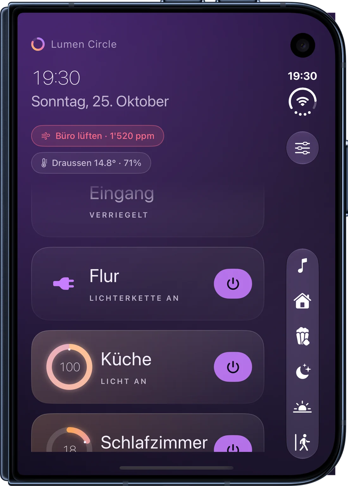
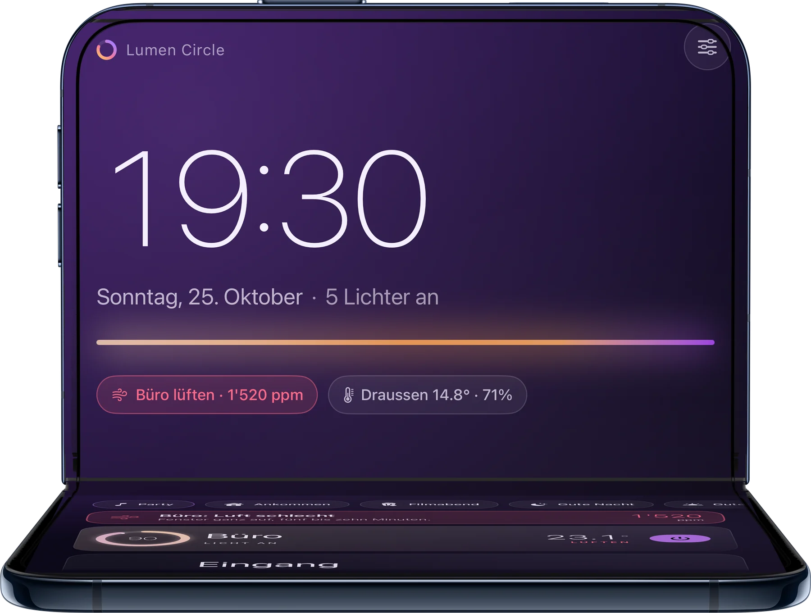
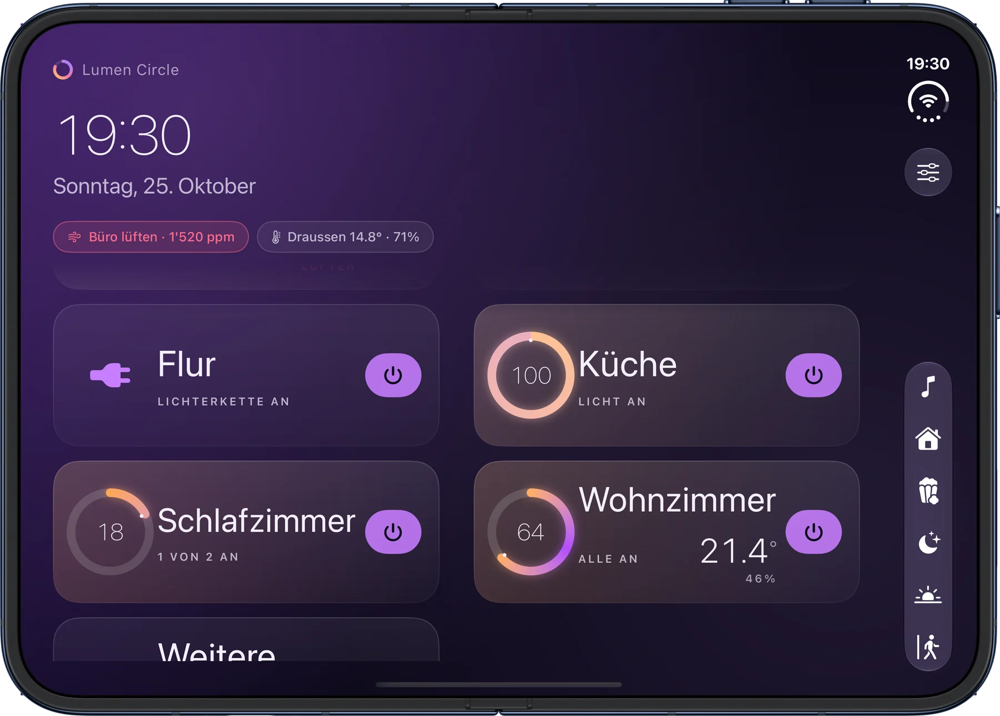
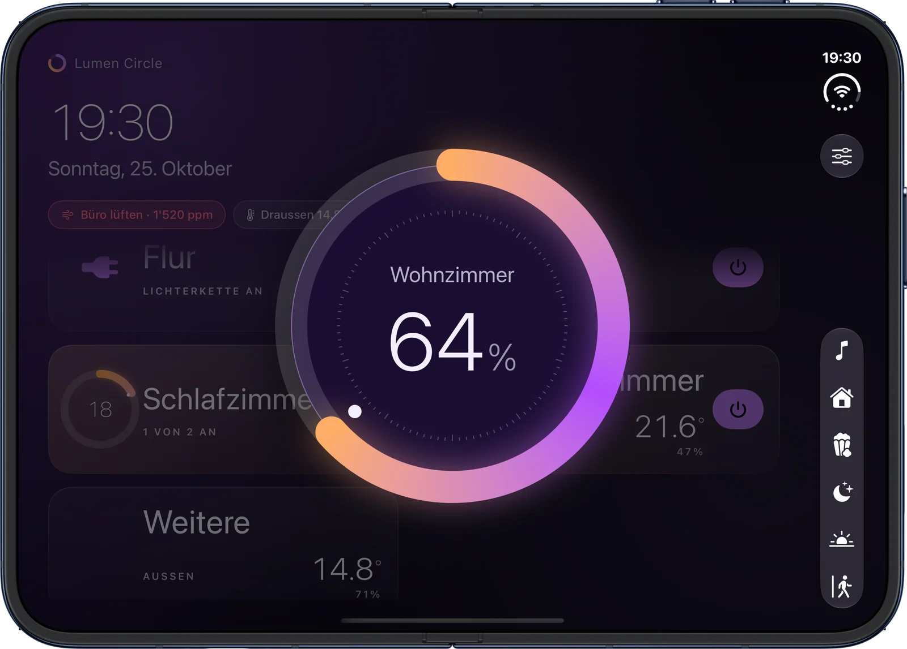
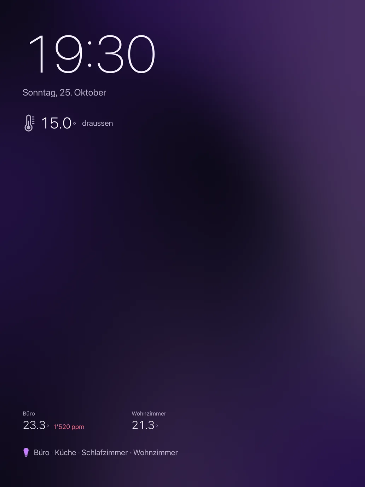
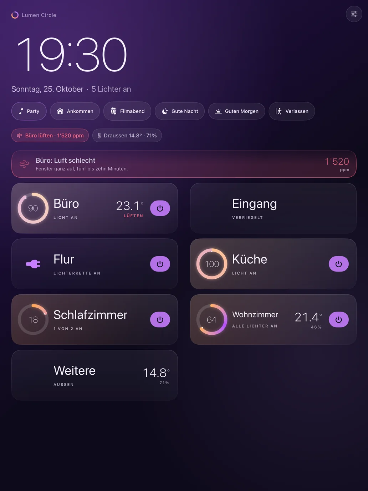
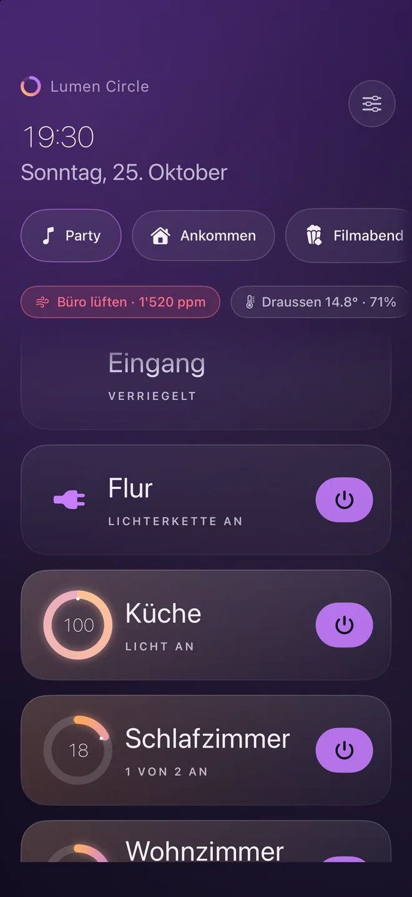
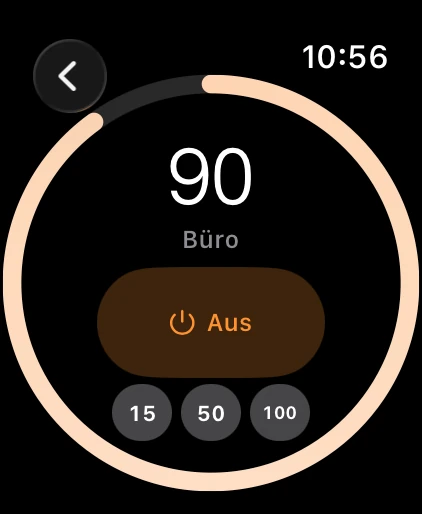

01 · Zugeklappt
Die Fernbedienung.
Räume statt Geräteliste, mit einem Daumen bedient. Die Szenen liegen rechts in der Leiste, genau unter dem Daumen — Uhrzeit, Netz und Einstellungen gleich darüber.

Für Apple Home und Philips Hue
Ein iPad an der Wand, das du auch aus zwei Metern Entfernung noch mühelos abliest. Das iPhone als Fernbedienung in der Tasche, die Apple Watch als präziser Drehregler am Handgelenk und der Mac als diskretes Fenster neben der Arbeit.
Ein Jahresabo die ersten vier Tage komplett kostenlos

Neu fürs iPhone Duo
Zugeklappt die Fernbedienung, aufgeklappt das Panel. Und beim Klappen bleibt der Raum, den du gerade ansiehst, genau dort, wo er war.
01 · Zugeklappt
Räume statt Geräteliste, mit einem Daumen bedient. Die Szenen liegen rechts in der Leiste, genau unter dem Daumen — Uhrzeit, Netz und Einstellungen gleich darüber.

02 · Aufgeklappt
Die Räume verteilen sich auf zwei Spalten, die Kacheln bleiben gleich gross. Klappst du wieder zu, steht der Raum, den du eben angesehen hast, auf derselben Höhe — nichts springt weg.

03 · Der Ring
Ein Tipp zieht den Ring gross auf, ein Zug regelt alle Leuchten des Raums. Halb aufgeklappt rückt er auf die Seite, die du angetippt hast — nie in den Falz.

04 · Halb offen
Stell das Duo auf wie einen kleinen Laptop. Oben stehen gross die Uhrzeit und ein Band in den Farben der Lampen, die gerade brennen. Unten liegen Szenen und Räume, griffbereit.
Vier Geräte, ein Zuhause
iPad
Läuft rund um die Uhr. Es zeigt dir Räume statt unzähliger Einzelgeräte, dazu Temperatur, Luftqualität und den aktuellen Stromverbrauch deines Lichts. Nach einer Minute ohne Berührung wird das Panel zu einem ruhigen Display: Du siehst Uhrzeit, Datum und den Status deiner Räume. Hast du einen Aussenfühler, steht die Temperatur direkt unter der Uhr. Läuft ein Stromzähler, siehst du die aktuelle Leistung. Nichts brennt sich in den Bildschirm ein, nachts blendet absolut nichts.


iPhone
Dasselbe vertraute Bild direkt in deiner Hand. Ein kurzes Tippen öffnet den Steuerungsring, ein Wisch dimmt das Licht im ganzen Raum. Und falls du gehst und das Licht noch brennt, erinnert dich eine kurze Mitteilung daran.

Apple Watch
Der Ring füllt das gesamte Display, die Digitale Krone wird zum Dimmer. Jeder Schritt rastet spürbar ein – ein Prozent pro Klick. Kein mühsames Zielen mit dem Daumen, kein Finger, der den halben Bildschirm verdeckt. Ein Blick aufs Zifferblatt reicht, um zu sehen, ob noch irgendwo Licht brennt.

Mac
Dieselbe App als praktisches Fenster auf dem Schreibtisch oder in der Küche. Sie kommuniziert direkt mit HomeKit auf deinem Mac – ein iPhone muss nicht danebenliegen.

Lichtsteuerung
Wie weit der Bogen geschlossen ist, zeigt dir sofort, wie hell es im Raum ist. Der Ring leuchtet exakt in der Farbe deiner Lampen. Ausser nachts: Dann bleibt die Oberfläche monochrom, damit dich kein störendes blaues Licht weckt.
Dreissig Leuchten in einer Liste sind ein Albtraum. Als Räume gruppiert, sind es nur sechs übersichtliche Zeilen. Es heisst dann einfach: „Im Wohnzimmer brennt Licht“ statt „Leuchte 3 von 7 steht auf 72 %“.

Strom
Philips Hue-Lampen messen ihren eigenen Verbrauch nicht. Lumen Circle übernimmt das für dich – mit echten Messkurven von einem Prozent bis zur vollen Helligkeit. Eine halb gedimmte Lampe zieht nämlich oft nur ein Drittel des Stroms. Bei unbekannten Lampen (wie Hue-Steckdosen) rechnet die App mit realistischen Schätzwerten und kennzeichnet diese transparent.
Ein einziger Knopfdruck auf der Hue Bridge genügt für die komplette Einrichtung. Die präzisen Messwerte stammen aus dem offenen Projekt Powercalc.
Ausserdem
Einrichten
Räume, Namen und Szenen werden direkt aus der Apple Home-App übernommen. Lumen Circle spricht lokal mit HomeKit. Keine Anmeldung, kein externer Dienst dazwischen.
Schon wird der Stromverbrauch gezählt. Die App findet die Bridge in deinem Heimnetzwerk automatisch.
iOS fragt dich erst nach lokalem Netzwerk, Mitteilungen oder Standort, wenn du die Funktion das erste Mal nutzt. Lehnst du ab, fehlt nur diese eine Funktion.
Voraussetzung ist ein eingerichtetes Zuhause in der Apple Home-App. Zubehör ohne HomeKit erreichst du über einen Kurzbefehl.
Preis
Die ersten vier Tage kannst du Lumen Circle völlig kostenlos und mit allen Funktionen testen. Danach startet das Jahresabo, das für alle deine Geräte mit derselben Apple-ID gilt und sich über „Kauf wiederherstellen“ jederzeit auf ein neues Gerät holen lässt. Kündbar jederzeit direkt in den Einstellungen deiner Apple-ID.
Was es kostet, steht im App Store — in deiner Währung und für dein Land. Der Betrag ist nicht überall derselbe: Acht Franken sind in der Schweiz ein Kaffee und anderswo ein halber Tageslohn. Massgeblich ist immer der Preis, den dir der App Store vor dem Kauf nennt.
Datenschutz
Deine Daten bleiben bei dir. Es gibt keine Server, und wir werten rein gar nichts aus. Das Einzige, was nach draussen geht, sind der App-Store-Kauf und die Modellkennung deiner Lampe (z. B. „LCT015“) an die offene Powercalc-Bibliothek, um das richtige Stromprofil zu laden. Kein Name, keine Adresse, nicht einmal die Anzahl deiner Lampen wird übermittelt. Selbst der Ort für die Weggeh-Meldung bleibt lokal auf deinem Gerät gespeichert. Die ausführliche Fassung.
Fragen
Nein. Lumen Circle zeigt und steuert alles, was in deiner Apple Home-App steht — Licht, Steckdosen, Sensoren. Eine Hue Bridge braucht nur der Stromzähler, weil Hue-Lampen ihren Verbrauch nicht selbst melden.
Nein. Es gibt weder Anmeldung noch Server. Die App spricht direkt mit HomeKit und mit deiner Hue Bridge im eigenen Netz.
Auf iPhone, iPad, Apple Watch und Mac — ein Abo für alle vier. Vorausgesetzt sind iOS, iPadOS und macOS 26 oder neuer. Auf dem iPhone Duo nutzt die App beide Bildschirme.
Aus Modell, Schaltzustand, Helligkeit und Farbe, mit echten Messkurven von einem Prozent bis zur vollen Helligkeit. Die Werte stammen aus dem offenen Projekt Powercalc. Für Lampen ohne Kurve rechnet die App mit Schätzwerten und kennzeichnet sie.
Ein Jahresabo, die ersten vier Tage kostenlos. Was es bei dir kostet, zeigt der App Store — der Preis richtet sich nach dem Land.
Praktisch keine. Kein Konto, keine Werbung, keine Auswertung. Nach draussen gehen nur der Kauf über den App Store und die Modellkennung deiner Lampe, um das richtige Stromprofil zu laden.
Die ersten vier Tage komplett kostenlos. Auf iPhone, iPhone Duo, iPad, Apple Watch und Mac.